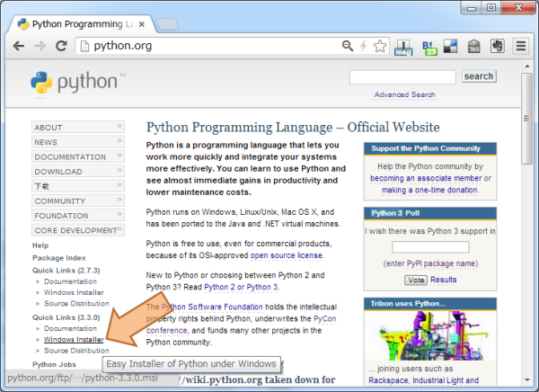

Installing Sphinx¶
Since Sphinx is written in the Python language, you need to install Python (the required version is at least 2.6) and Sphinx.
Sphinx packages are available on the Python Package Index.
You can also download a snapshot from the Git repository:
There are introductions for several environments:
Debian/Ubuntu: Install Sphinx using packaging system¶
You may install using this command if you use Debian/Ubuntu.
$ apt-get install python-sphinx
Other Linux distributions¶
Most Linux distributions have Sphinx in their package repositories. Usually the package is called “python-sphinx”, “python-Sphinx” or “sphinx”. Be aware that there are two other packages with “sphinx” in their name: a speech recognition toolkit (CMU Sphinx) and a full-text search database (Sphinx search).
Mac OS X: Install Sphinx using MacPorts¶
If you use Mac OS X MacPorts, use this command to install all necessary software.
$ sudo port install py27-sphinx
To set up the executable paths, use the port select command:
$ sudo port select --set python python27
$ sudo port select --set sphinx py27-sphinx
Type which sphinx-quickstart to check if the installation was successful.
Windows: Install Python and Sphinx¶
Install Python¶
Most Windows users do not have Python, so we begin with the installation of Python itself. If you have already installed Python, please skip this section.
Go to https://www.python.org/, the main download site for Python. Look at the left sidebar and under “Quick Links”, click “Windows Installer” to download.
Note
Currently, Python offers two major versions, 2.x and 3.x. Sphinx 1.3 can run under Python 2.6, 2.7, 3.3, 3.4, with the recommended version being 2.7. This chapter assumes you have installed Python 2.7.
Follow the Windows installer for Python.

After installation, you better add the Python executable directories to the
environment variable PATH in order to run Python and package commands such
as sphinx-build easily from the Command Prompt.
Right-click the “My Computer” icon and choose “Properties”
Click the “Environment Variables” button under the “Advanced” tab
If “Path” (or “PATH”) is already an entry in the “System variables” list, edit it. If it is not present, add a new variable called “PATH”.
Add these paths, separating entries by ”;”:
C:\Python27– this folder contains the main Python executableC:\Python27\Scripts– this folder will contain executables added by Python packages installed with pip (see below)
This is for Python 2.7. If you use another version of Python or installed to a non-default location, change the digits “27” accordingly.
Now run the Command Prompt. After command prompt window appear, type
pythonand Enter. If the Python installation was successful, the installed Python version is printed, and you are greeted by the prompt>>>. TypeCtrl+Zand Enter to quit.
Install the pip command¶
Python has a very useful pip command which can download and install 3rd-party libraries with a single command. This is provided by the Python Packaging Authority(PyPA): https://groups.google.com/forum/#!forum/pypa-dev
To install pip, download https://bootstrap.pypa.io/get-pip.py and
save it somewhere. After download, invoke the command prompt, go to the
directory with get-pip.py and run this command:
C:\> python get-pip.py
Now pip command is installed. From there we can go to the Sphinx install.
Note
piphas been contained in the Python official installation after version- of Python-3.4.0 or Python-2.7.9.
Installing Sphinx with pip¶
If you finished the installation of pip, type this line in the command prompt:
C:\> pip install sphinx
After installation, type sphinx-build -h on the command prompt. If everything worked fine, you will get a Sphinx version number and a list of options for this command.
That it. Installation is over. Head to First Steps with Sphinx to make a Sphinx project.